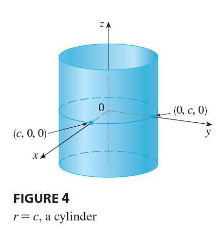
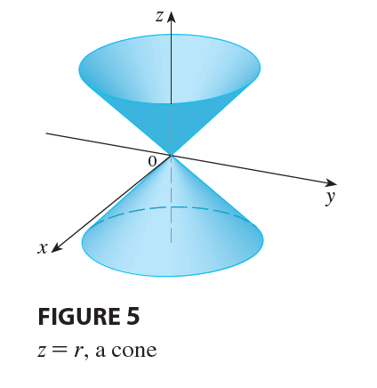

Cylindrical coordinates are useful in problems that involve symmetry
about an axis, and the z-axis is chosen to coincide with this axis of
symmetry. For instance, the axis of the circular cylinder with Cartesian
equation \(x^2 + y^2 = c^2\) is the
z-axis. In cylindrical coordinates this cylinder has the very simple
equation \(r=c\). (See Figure 4.) This
is the reason for the name “cylindrical” coordinates.

EXAMPLE 2 Describe the surface whose equation in
cylindrical coordinates is \(z=r\).
SOLUTION

The equation says that the z-value, or height, of each point on the
surface is the same as r, the distance from the point to the z-axis.
Because \(\theta\) doesn’t appear, it
can vary. So any horizontal trace in the plane \(z=k\) (\(k>0\)) is a circle of radius k. These
traces suggest that the surface is a cone. This prediction can be
confirmed by converting the equation into rectangular coordinates. From
the first equation in (2) we have \[
z^2 = r^2 = x^2 + y^2
\] We recognize the equation \(z^2 =
x^2 + y^2\) (by comparison with Table 1 in Section 12.6) as being
a circular cone whose axis is the z-axis (see Figure 5).